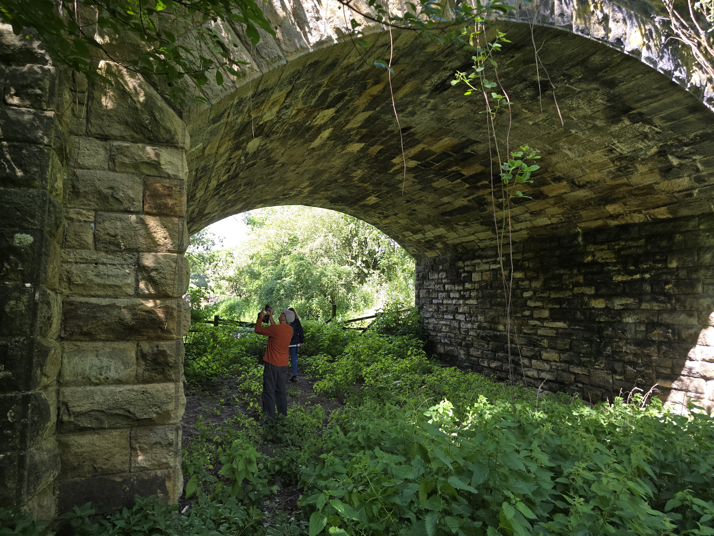

Interactive Map
Click on the circles to see images of the route


Hexham to Haydon Bridge - Straker Way
Walking and wheeling active travel route
Project Aims
Project Aims to achieve Link Hexham and Corbridge with a safe off road cycling, walking and wheeling route.
At the moment residents either cycle along a road routes which are dangerous and contain hill climbs, putting people
off Enhancing community health and wellbeing: more people will be physically active and accessing the benefits of cycling
for their physical and mental wellbeing.
Supporting economic growth: there will be a better offering for cycle tourists who
will visit the area in greater numbers and thereby generate more revenue and jobs. Contributing to Net Zero: safer and more
accessible cycling routes will encourage more people to choose to cycle (often in combination with public transport) rather
than go by car, thus reducing emissions.
A good proportion of the route only needs unused paths to be put into use again and
linked, such as the old A69 road and parts of the Allendate disused railway line Link individual towns along the Tyne Valley
river with a vision of eventually creating a super cycle highway between Newcastle and Carlise.
Why is it needed?
To make it
easier for residents to make short journeys by bike from their homes to these routes by building dedicated cycle lanes that
avoid fast country roads and overcome barriers such as limited river crossing points for cyclists Hexham is a local centre
for commuters, having two large employers namely the Egger factory and Hexham General hospital, it also has five supermarkets.
During the development of the Haydon Parish Neighbourhood Plan in 2020/21 it became clear that one of the most desired improvements
to the village would be the development of a cycle path to Hexham. Community consultation recorded 88% support for the scheme.
The project will also align with Hexham's Neighbourhood Plan, which calls for improvements to our pedestrian and cycling network and
the overall accessibility of the town (http://www.hexhamneighbourhoodplan.co.uk). EGGER in Hexham employs 500 people and provides a
cycle to work scheme. EGGER wishes to ensure employees who travel from Haydon Bridge to Hexham by bike can travel safely.
Need recognized by Hexham and Haydon Bridge Town councils and supported by our MP, Joe Morris
Project Team
Rob Aubrook - (Hexham resident) Strategic Adviser to Visit Northumberland Board;Northumberland Cycling and Walking board member;Member of Joint Local Access Forum; Member of NNPA FIPL panel
Jon Keyte - (Haydon Bridge resident) A civil engineer who has designed multi user paths and have been closely involved with their construction logistics
Phil Hartley - (Haydon Bridge Resident) - A member of Haydon Bridge Development Trust
Michael Domingue - Hexham town Green Councillor and a member of Cycling Tynedale